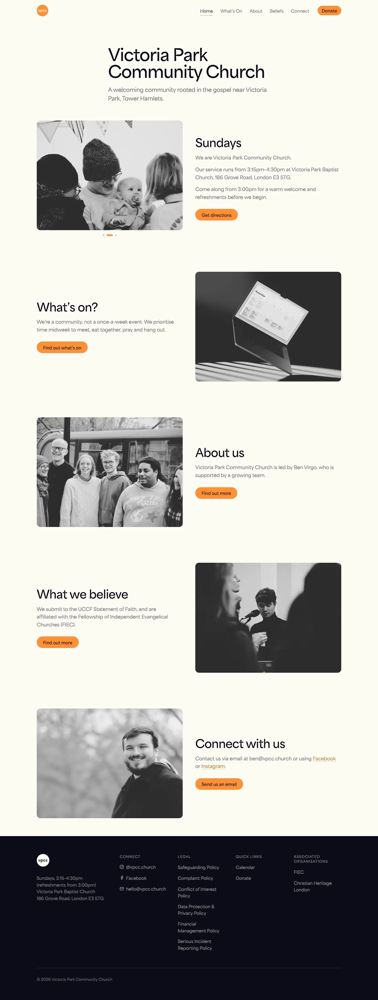
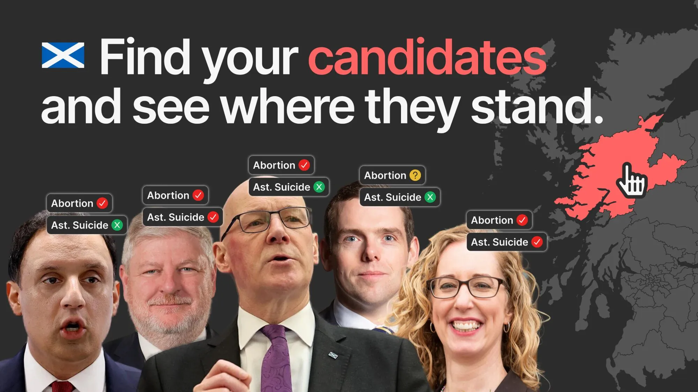
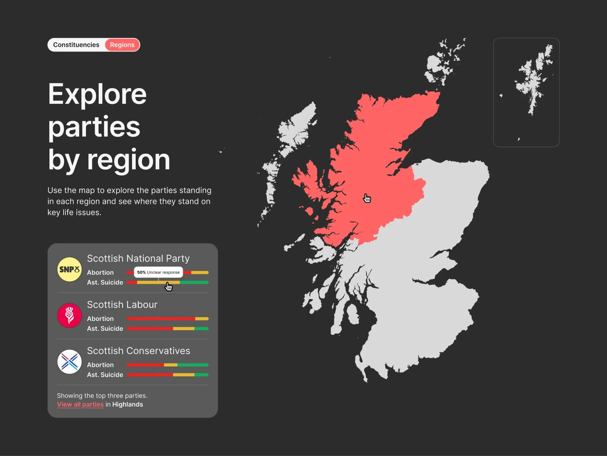
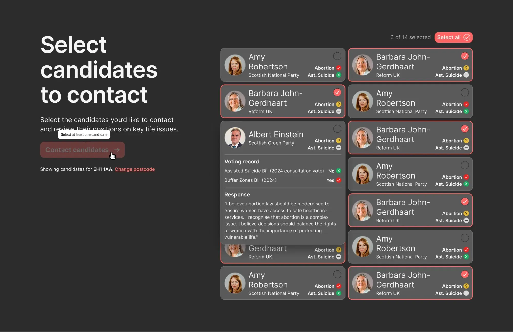
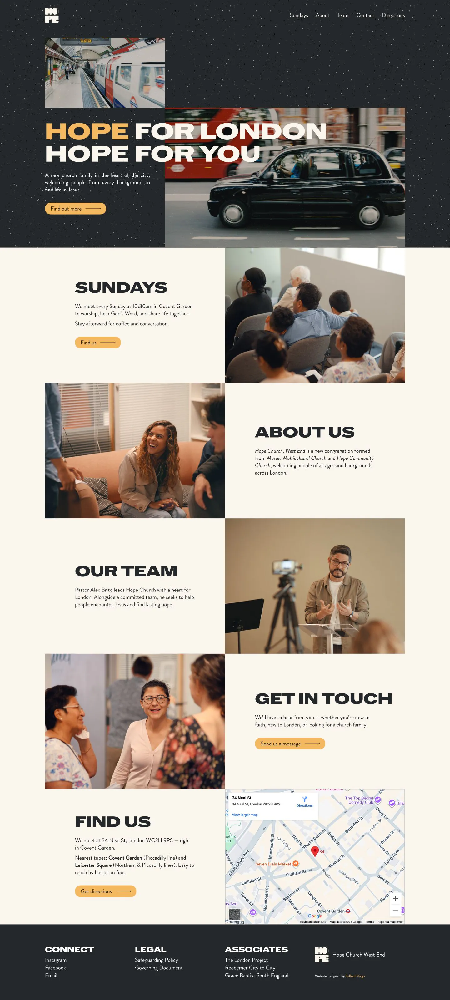
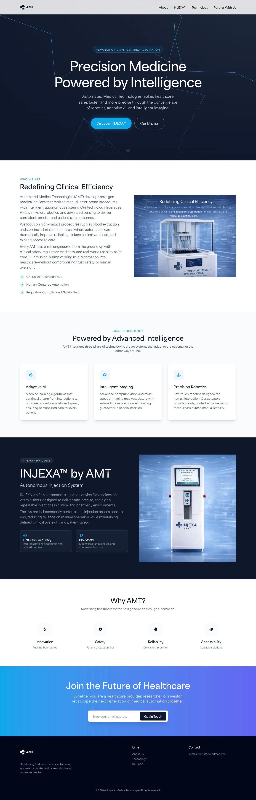

Victoria Park Community Church
Visual identity, website and artworkArtwork
Artwork
Artwork
Each project can now carry several pieces: its site capture plus artwork, adverts or app screens. SPUC joins as the fourth entry, with no link. Dashed tiles stand in for the Victoria Park artwork you haven’t sent yet. Shown open; the section can stay behind its toggle or open by default.
A ruled list, one row per project: name, disciplines and link on the left, its pieces in a sideways strip on the right, all at one height and uncropped. Same language as the project cards above it (rules, sideways belts) at a smaller scale. A project with one piece makes a short row; one with eight just scrolls further. On a phone the name sits above its strip.

Website design and advertising
Scottish Parliament election, 2026
3 pieces



Visual identity, website, photography
1 piece


Two columns of cards, each in the project’s own colours, so the section stops being black and white. Pieces sit in a small bento: the lead piece big, the rest stacked beside it. Most lively of the three. Cost: everything past the lead is cropped to fit, and the bento caps a project at about four pieces before they get too small.
Keeps today’s three-up grid and adds a row of small thumbnails under each frame; tap one to swap it in. Smallest change and the page stays tidy. Cost: still black and white, and the extra pieces are postage stamps until someone taps, so most visitors won’t see them.
Visual identity, website and artwork
Website design and advertising
Visual identity, website, photography